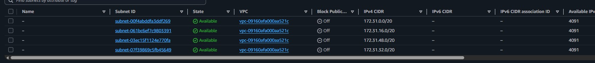
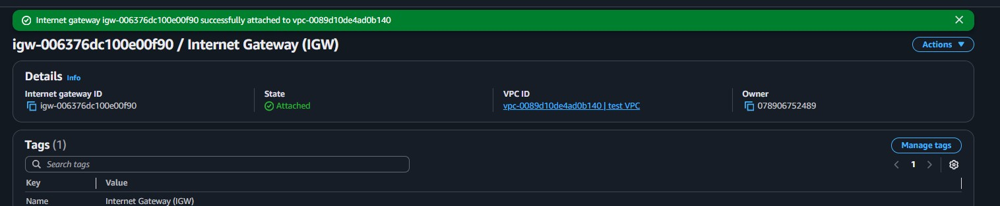
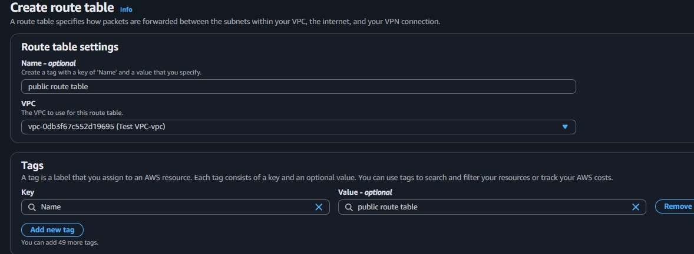
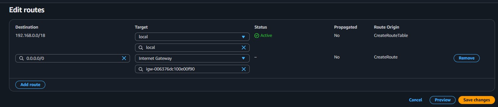
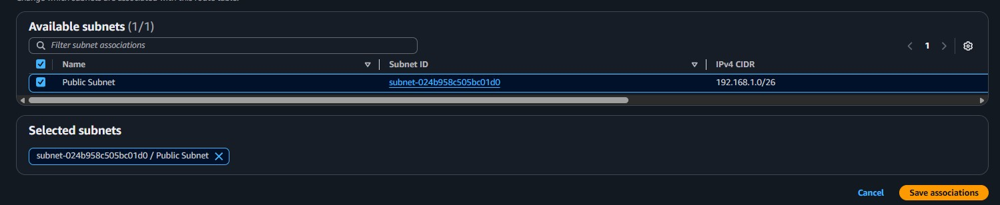
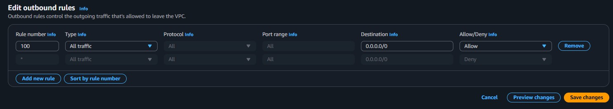
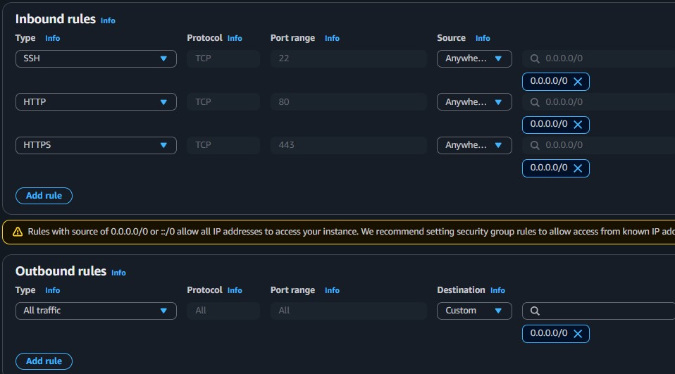
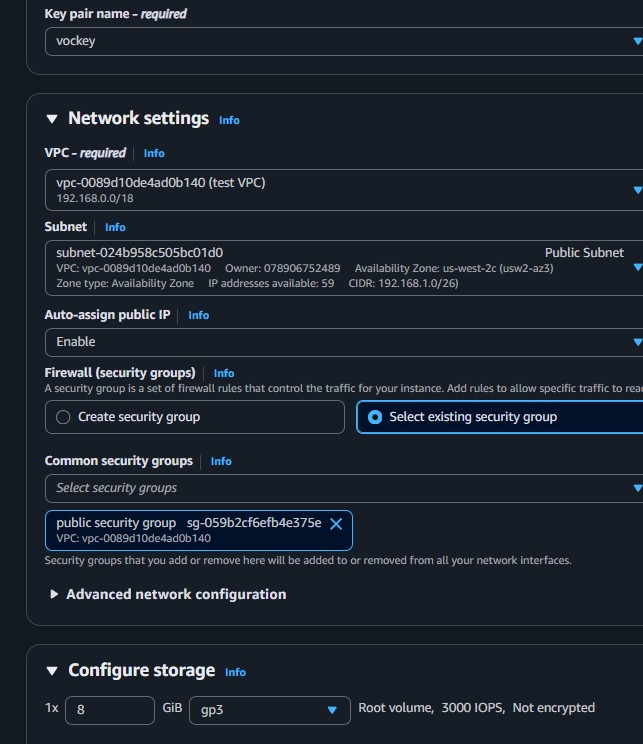

Starting State
The VPC existed with 4 default subnets but no IGW, no custom routes, and default NACLs. No internet connectivity was possible.
This lab builds a complete VPC networking stack from scratch. Starting with a pre-existing VPC that has no internet access, each component (Internet Gateway, Route Table, NACL, Security Group) is manually configured to achieve full connectivity.
Started with a pre-built test VPC (192.168.0.0/18) that had no internet access. Manually configured each networking component: created an Internet Gateway, a custom Route Table, modified NACLs, created a Security Group, and launched an EC2 instance. Verified connectivity by pinging google.com from the instance.
The VPC existed with 4 default subnets but no IGW, no custom routes, and default NACLs. No internet connectivity was possible.
Created: Internet Gateway, public route table with 0.0.0.0/0 route to IGW, custom NACL allowing all traffic, and a security group for SSH/HTTP/HTTPS.
Launched an EC2 instance in the public subnet, connected via SSH, and successfully pinged google.com to confirm internet connectivity.
Pre-existing VPC with CIDR 192.168.0.0/18 and 4 default subnets. Served as the foundation for the complete networking build.
Gateway component that connects the VPC to the public internet. Created and attached manually to the test VPC.
Launched a t3.micro instance in the configured public subnet to test the end-to-end connectivity.
Detailed documentation of each networking component configured to achieve internet connectivity.
192.168.0.0/18.172.31.0.0/20, 172.31.16.0/20, 172.31.48.0/20, and 172.31.32.0/20. These are default VPC subnets.

0.0.0.0/0, Target Internet Gateway (igw-006376dc100e00f90).



| Type | Protocol | Port | Source |
|---|---|---|---|
| SSH | TCP | 22 | 0.0.0.0/0 |
| HTTP | TCP | 80 | 0.0.0.0/0 |
| HTTPS | TCP | 443 | 0.0.0.0/0 |


ping -c 4 google.com from the terminal to test internet connectivity.This lab demonstrated the full process of building a VPC networking stack component by component. Unlike the VPC Wizard (used in Lab 263), this manual approach provides complete control over each resource and a deeper understanding of how VPC networking works.
The most important takeaway is that internet connectivity is not a single switch, but the result of multiple layers working in sequence: the instance must have a public IP, the subnet must be associated with a route table that has a route to an Internet Gateway, the NACL must allow the traffic, and the Security Group must permit the specific ports. If any layer is misconfigured, connectivity fails.